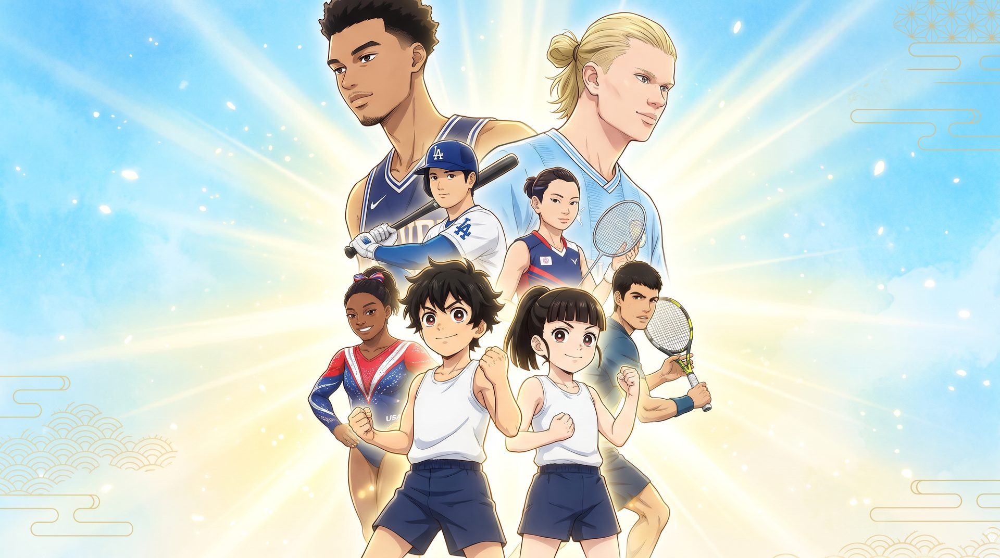
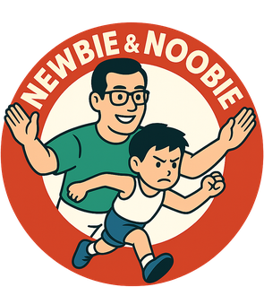

訓練護照
Youth Training Passport
你的訓練，一塊一塊蓋起來。
輸入教練給你的護照編號，蓋下屬於你的那個章。
先輸入護照編號


訓練護照輸入教練給你的護照編號，蓋下屬於你的那個章。
先輸入護照編號
每堂課的時間會依「基礎動作、肌力、爆發力、增強式、速度敏捷、能量系統、活動度」七種能力分配。某一種能力累積到門檻分鐘數，就長出一塊那個顏色的方塊。一個 block（4–6 週）結束會畫一條完成線。教練看到你有突破，會額外送金、銀或彩虹方塊。